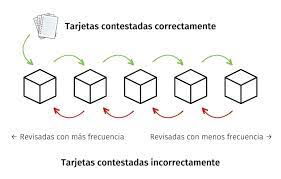

Ciencia
Repeticion espaciada
¿Qué es?
La repetición espaciada, también conocida como repetición distribuida o espaciada, es una técnica de estudio o aprendizaje que se basa en la idea de que el repaso de la información a intervalos regulares y crecientes en el tiempo mejora la retención y recuperación de dicha información en la memoria a largo plazo.

¿En qué consiste?
Consiste en revisar el material de estudio o practicar determinadas habilidades en momentos específicos y estratégicos, de manera que se aproveche el fenómeno psicológico conocido como "curva del olvido". Según esta curva, la memoria humana tiende a olvidar rápidamente la información si no se repasa, pero mediante la repetición espaciada, se puede reforzar y consolidar el recuerdo, aumentando la probabilidad de recordarla en el futuro.
¿Cuáles son sus ventajas?
- Mejora la retención a largo plazo: La repetición espaciada promueve una retención más duradera de la información, ya que se refuerza en intervalos óptimos de tiempo.
- Ahorro de tiempo: Al utilizar la repetición espaciada, se optimiza el tiempo de estudio, ya que se enfoca en revisar y repasar la información justo en el momento adecuado para su retención, evitando repeticiones innecesarias.
- Refuerza la memoria a largo plazo: Al distribuir las repeticiones en intervalos crecientes, se fomenta la transferencia de la información de la memoria de trabajo a la memoria a largo plazo, lo que facilita su recuperación en el futuro
- Mayor eficacia de estudio: Al utilizar la repetición espaciada, se aprovecha el efecto de consolidación del aprendizaje, lo que permite un mejor almacenamiento y recuperación de la información.
- La repetición espaciada se puede implementar utilizando diferentes métodos y técnicas, como tarjetas de memoria con preguntas y respuestas, programas de software especializados en repetición espaciada o aplicaciones móviles diseñadas para este propósito. Estos recursos utilizan algoritmos que determinan los intervalos óptimos para repasar el material de estudio en función de las respuestas y el nivel de recordación del estudiante.
Recuerdo activo
¿Qué es?
El recuerdo activo, también conocido como recuperación activa o testing effect en inglés, es un fenómeno cognitivo que se refiere a la práctica de recordar activamente información desde la memoria en lugar de simplemente revisarla o reestudiarla. Consiste en intentar recordar y recuperar la información de forma activa, sin tenerla delante, lo que implica un esfuerzo mental mayor que la simple lectura o revisión pasiva.
¿En qué consiste?
Consiste en intentar recordar activamente información almacenada en la
memoria sin tener acceso inmediato a ella. En lugar de simplemente
revisar o reestudiar el material, el recuerdo activo implica
esforzarse conscientemente por recuperar la información mediante la
aplicación de técnicas como la generación de preguntas, la
recuperación de fragmentos de conocimiento, la elaboración de
resúmenes o la explicación en voz alta.
Este proceso requiere un esfuerzo mental más significativo que la
simple lectura o revisión pasiva, ya que implica activar y utilizar
los mecanismos de memoria para recuperar y reconstruir la información
almacenada. Al hacerlo, se fortalecen las conexiones neuronales
asociadas con ese recuerdo específico, lo que facilita su posterior
recuperación y mejora la retención a largo plazo.
Estrategias
- Realizar preguntas sobre el material y tratar de responderlas sin consultar el texto.
- Intentar recordar y escribir un resumen o un esquema de los conceptos clave sin consultar las notas o el libro.
- Explicar en voz alta los conceptos o ideas a alguien más, como si se estuviera enseñando el tema.
- Participar en actividades de recuperación activa, como juegos de preguntas y respuestas o flashcards.